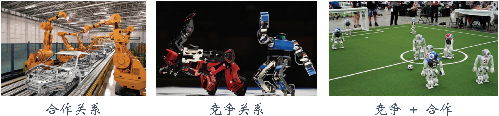

随机博弈 / 马尔可夫博弈
基础定义
多个智能体在同一个环境进行的交互可以被建模为一个随机博弈过程：
| 组成元素 |
数学定义 |
组成元素 |
数学定义 |
| 智能体集合 |
N={1, 2, ⋯, n} |
联合动作空间 |
A=A1×A2×⋯×An |
| 状态空间 |
S |
智能体 i 的奖励函数 |
Ri:S×A↦R |
| 智能体 i 的动作空间 |
Ai |
状态转移概率 |
P:S×A×S↦[0, 1] |
每个智能体在环境状态的基础上进行决策，不同的智能体拥有不同的独立的策略：
π1(⋅∣⋅):S×A1↦[0, 1]π2(⋅∣⋅):S×A2↦[0, 1]⋯πn(⋅∣⋅):S×An↦[0, 1]
环境状态的转移取决于当前状态 st 以及联合动作 at={at1, at2, ⋯, atn}，联合策略可以表示为：
π(at∣st)=π(at1, at2, ⋯, atn∣st)=i=1∏nπi(ati∣st)
在随机博弈下，每个智能体的目标是最大化各自的累计奖励：
Ji(π)=Es0∼b0(⋅)Ea0∼π(⋅∣s0)Es1∼p(⋅∣s0, a0)Ea1∣π(⋅∣s1)⋯EsT∼p(⋅∣sT−1, aT−1)EaT∼π(⋅∣sT)[t=0∑TγtRi(st, at)]
类似地，定义每个智能体的动作价值函数以及状态价值函数：
qi(t)(st, at∣π)=Est+1∼p(⋅∣st, at)Eat+1∼π(⋅∣st+1)⋯EsT∼p(⋅∣sT−1, aT−1)EaT∼π(⋅∣sT)[τ=t∑Tγτ−tRi(sτ, aτ)]vi(t)(st∣π)=Eat∼π(⋅∣st)Est+1∼p(⋅∣st, at)Eat+1∼π(⋅∣st+1)⋯EsT∼p(⋅∣sT−1, aT−1)EaT∼π(⋅∣sT)[τ=t∑Tγτ−tRi(sτ, aτ)]
推广到无限期规划下：
qi(st, at∣π)=Est+1∼p(⋅∣st, at)Eat+1∼π(⋅∣st+1)Est+2∼p(⋅∣st+1, at+1)Eat+2∼π(⋅∣st+2)⋯[τ=t∑∞γτ−tRi(sτ, aτ)]vi(st∣π)=Eat∼π(⋅∣st)Est+1∼p(⋅∣st, at)Eat+1∼π(⋅∣st+1)Est+2∼p(⋅∣st+1, at+1)Eat+2∼π(⋅∣st+2)⋯[τ=t∑∞γτ−tRi(sτ, aτ)]
在以上定义下，每个智能体的动作价值函数和状态价值函数仍然满足贝尔曼期望方程。
系统设定
多智能体强化学习下对于智能体的奖励函数的一些特殊关系设定如下：
| 设定 |
描述 |
| 完全合作关系 |
所有智能体的利益一致，获得的奖励相同，有共同的目标 |
| 完全竞争关系 |
一方的收益是另一方的损失，双方奖励负相关，零和博弈下奖励总和为 0 |
| 合作竞争混合 |
智能体分为多个群组，组内为合作关系，组间为竞争关系 |

在多智能体下，策略学习收敛的标志是所有智能体的平均回报不再变化，达到纳什均衡，形式化的定义为：
∀ s∈S ∀ i∈N:vi(s∣π1⋆, ⋯, πi⋆, ⋯, πn⋆)=πimaxvi(s∣π1⋆, ⋯, πi, ⋯, πn⋆)
即在任意状态 s 下，任意智能体 i 做出单方面的策略更改无法获得更高的期望回报。可以证明，在参与者、动作空间和状态空间有限时，随机博弈存在静态随机策略的纳什均衡（proof）。
策略梯度
在参数化的策略下，每个智能体的策略 πi 的参数为 θi，每个智能体的目标函数对其策略参数的梯度为：
∇θiJi(θi)=∇θis0∑a0∑s1∑a1∑⋯sT∑aT∑[b0(s0)j=1∏nt=0∏Tπj(atj∣st; θj)t=1∏Tp(st∣st−1, at−1)t=0∑TγtRi(st, at)]=Es0Ea0Es1Ea1⋯EsTEaT[(t=0∑T∇θilnπi(ati∣st; θi))⋅(t=0∑TγtRi(st, at))]
考虑乘积因子 ∇θilnπi(ati∣st, θi)Ri(sτ, aτ) 在 t>τ 时的期望为：
Es0Ea0Es1Ea1⋯EsTEaT[∇θilnπi(ati∣st, θi)Ri(sτ, aτ)]=Es0Ea0Es1Ea1⋯EstEat[∇θilnπi(ati∣st, θi)Ri(sτ, aτ)]
其中：
Eat[∇θilnπi(ati∣st, θi)Ri(sτ, aτ)]=Ri(sτ, aτ)Eat∇θilnπi(ati∣st, θi)=Ri(sτ, aτ)Eati∇θilnπi(ati∣st, θi)=0
因此所有 t>τ 的乘积因子项均为 0，策略梯度简化为：
∇θiJi(θi)=Es0Ea0Es1Ea1⋯EsTEaT[t=0∑T∇θilnπi(ati∣st, θi)τ=t∑TγτRi(st, at)]=Es0Ea0Es1Ea1⋯EstEat[t=0∑T∇θilnπi(ati∣st, θi)⋅γtqi(t)(st, at)Est+1Eat+1⋯EsTEaTτ=t∑Tγτ−tRi(sτ, aτ)]=t=0∑TγtEs0Ea0Es1Ea1⋯EstEat[∇θilnπi(ati∣st, θi)qi(t)(st, at)]
类似地，可以在策略梯度中加入基线函数来降低估计的方差：
∇θiJi(θi)=t=0∑TγtEs0Ea0Es1Ea1⋯EstEat[∇θilnπi(ati∣st, θi)(qi(t)(st, at)−b)]
其中基线函数 b 不依赖于 at={at1, at2, ⋯, atn}，一般将基线函数设置为状态价值函数 vi(t)(st)。